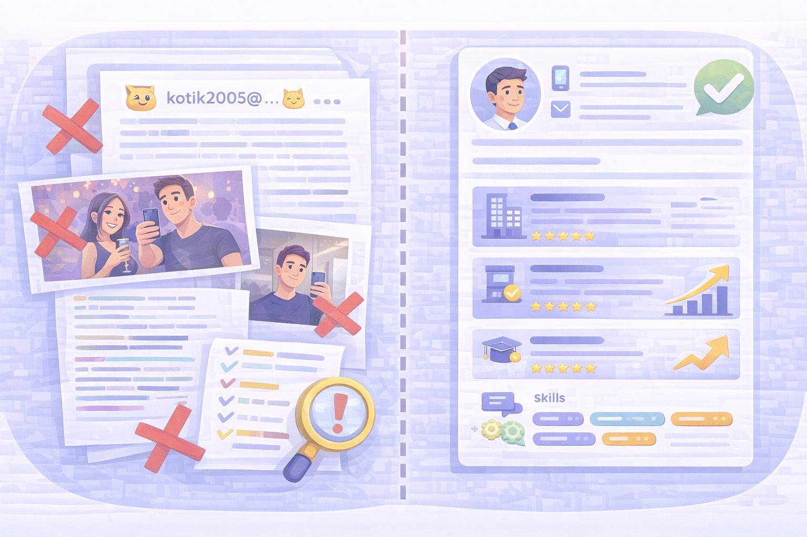

Резюме
Як скласти сильне резюме, яке привертає увагу роботодавців і допомагає отримати більше запрошень на співбесіду.
Основна структура
Гарне резюме — це коротко, чітко і по суті. Оптимальний розмір — 1 сторінка.
- Контакти (ПІБ, телефон, email, місто).
- Короткий опис — хто ви і що вмієте.
- Досвід роботи — місце, позиція, період, досягнення.
- Освіта — навчальний заклад, спеціальність.
- Навички — технічні та софт-скіли.
Короткий опис
Це 2–3 речення про ваш досвід та сильні сторони. Має показати, чим ви корисні компанії.
- Уникайте води («Я відповідальний та пунктуальний»).
- Додавайте конкретику («Маю досвід 1 рік у продажах, працював із CRM та холодними дзвінками»).
Досвід роботи
Найважливіший блок резюме — роботодавці дивляться на нього першим.
- Вказуйте досвід у зворотному хронологічному порядку.
- Не пишіть лише обов’язки — додавайте досягнення.
- Використовуйте формулу: дія → результат.
- Наприклад: «Підвищив продажі на 20% завдяки роботі з базою клієнтів».

Типові помилки
Ці помилки зменшують шанси отримати запрошення на співбесіду.
- Занадто багато тексту та «вода».
- Неправильний email (наприклад, kotik2005@...)
- Фото з вечірок або селфі в ліфті.
- Відсутність конкретних навичок.
- Плутана структура, багато шрифтів і кольорів.